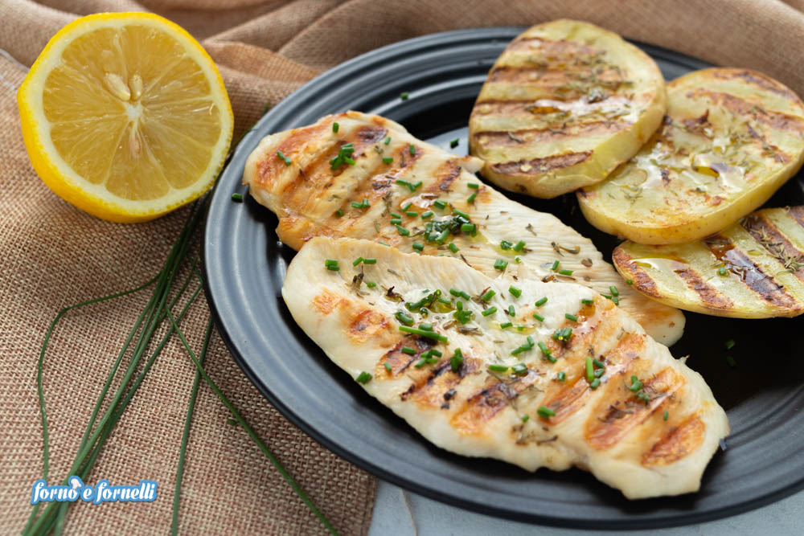

Il petto di pollo arrostito è un secondo di carne semplice e veloce, una scelta perfetta per mantenere la linea e stare leggeri
Se si vuole rendere il tutto più sfizioso si può pensare di optare per una semplice Cotoletta di pollo